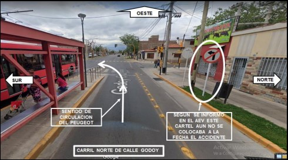
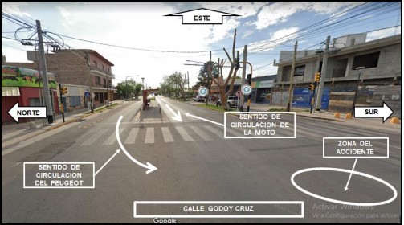

Resumen
El tema a desarrollar en el presente artículo de divulgación científica versa sobre el mensaje que transmite una sentencia judicial resuelta el día 25 de septiembre del año 2023 en el caso Gimenez. La metodología utilizada es el análisis del fallo a partir de explicaciones teóricas sobre ciertos institutos del Derecho Procesal Civil. En la parte de resultados existe un diálogo permanente entre aspectos conceptuales (sentencia judicial, costas y deberes del abogado) y el caso en concreto. Todo ese camino previo arriba, a modo de conclusión, a la importancia de ser lo más diligente posible como abogado a los fines de que las consecuencias de un obrar negligente del profesional no termine recayendo en su cliente.
Descriptores: negligencia, ética profesional.
Introducción
“Mientras enseño continúo buscando, indagando. Enseño porque busco, porque indagué, porque indago y me indago. Investigo para comprobar, comprobando intervengo, interviniendo educo y me educo. Investigo para conocer lo que aún no conozco y comunicar o anunciar la novedad”. Paulo Freire
El tema que abordaré en este trabajo de investigación se remonta a mi último día de prácticas en territorio en el Tribunal de Gestión Judicial Asociada en lo Civil, Comercial y Minas N°1, del Poder Judicial de Mendoza. En ese lugar transité dos semanas de vivencias y experiencias que me acercaron a la tan deseada y un poco misteriosa “realidad profesional”.
En primer lugar, tengo que admitir al lector que el día en que me senté a redactar este texto se me vinieron a la cabeza una lluvia de posibles temas de los que podría escribir. Sin embargo hay uno de ellos, que quizá sin darme cuenta, me marcó en ese preciso momento; es por ello que la finalidad de este trabajo es transmitírselo y dirigiré todos mis esfuerzos en tal sentido.
La historia se sitúa una mañana del mes de septiembre en uno de los despachos del Palacio de Justicia. La tarea fijada en el cronograma para ese día, el último de mis prácticas, estaba destinada a aprender cómo se elabora uno de los textos más preciados no solo para un jurista, si no también para la sociedad: una sentencia judicial.
Los días previos me dediqué a estudiar el expediente de tan solo 428 hojas. También, tengo que admitir que en ese contacto con el expediente, la primera impresión que tuve fue que el caso no tenía nada de fascinante. Se trataba solo de un accidente de tránsito común y corriente entre un auto y una moto, sin mayores complicaciones a simple vista. Sin embargo, lo que parecía aburrido se transformó en interesante una vez que llegó a su punto de culminación.
El objetivo general es comprender el mensaje que transmite la sentencia judicial del caso Gimenez: la importancia de la diligencia de un abogado para no perjudicar a sus clientes. A su vez, se desprenden los siguientes objetivos específicos: analizar los hechos y fundamentos del fallo, entender qué es una sentencia judicial, conocer cuáles son las partes de una sentencia, comprender el concepto, fundamento y cálculo de las costas judiciales; y ,finalmente, conocer los deberes fundamentales de los abogados.
Pretendo explicar que lo que llama la atención no son los hechos en sí ni las pruebas producidas si no la lectura “entre líneas” de esa sentencia, es decir, lo que transmite. Es por ello que invito al lector a que no se centre detenidamente en los números que encontrará a lo largo de este trabajo sino más bien en el mensaje a descifrar detrás de este texto judicial. Una vez que advierta este mensaje tengo la expectativa de que comprenda mi interés en el tema.
Antes de comenzar a desarrollar esta historia; es importante aclarar por un lado, que el caso da lugar para tratar diversos temas sin embargo solamente abordaré algunas aristas del mismo. Por el otro, a los fines de que el lector pueda arribar a una mejor compresión es que este trabajo presenta un diálogo permanente entre explicaciones teóricas y el caso en concreto.
Desarrollo
A) El Caso: los hechos y argumentos de cada parte
El caso Gimenez trata de un joven de 21 años (Nahuel) que reclama un monto de $ 9.063.344,70 por daños derivados de un accidente de tránsito ocurrido el día 17 de marzo del 2022. Ese día el actor iba manejando su moto por el carril exclusivo de ómnibus de la calle Tomás Godoy Cruz de Guaymallén, Mendoza. El demandado (Bruno) circulaba con su auto por la misma calle pero por el carril destinado a vehículos. Ambos iban en la misma dirección y al llegar a la intersección entre la calle Godoy Cruz y Ecuador, el conductor del auto realiza un giro hacia la izquierda y allí se produce el accidente. Producto de este accidente, Nahuel se fracturó la tibia derecha y fue operado.
Por un lado, el argumento principal del actor para sostener que el demandado fue el responsable exclusivo del accidente es que la maniobra del giro hacia la izquierda, en ese lugar, estaba prohibida por la ley de tránsito provincial. Los fundamentos de tal prohibición se basan en cuatro elementos:
- La presencia de cinco carriles de circulación por los cuales debía pasar el demandado para realizar dicha maniobra (dos carriles para ómnibus, dos carriles para vehículos y una ciclovía)
- La demarcación de línea amarilla simple en los carriles laterales y doble en el centro y a lo largo de todo el carril Godoy Cruz.
- La existencia de una parada de ómnibus, con una estructura metálica, cristales y asientos que dificulta la visibilidad de cualquier conductor hacia la izquierda, antes de llegar a la intersección.
- La existencia real y efectiva al momento del accidente de un cartel de prohibido girar a la izquierda pero que el personal actuante no lo consignó en el acta de accidente vial.
A su vez, el actor alega que aún cuando el cartel pudiera no haber estado colocado el día del accidente –pero insiste que ese día existía- la maniobra de ninguna manera era razonable ni prudente porque tenía que cruzar cinco carriles y todos estaban demarcados con líneas amarillas. En conclusión, concluye que la maniobra estaba prohibida por ser en sí misma extremadamente peligrosa. Para esta parte la regla es que el giro a la izquierda está prohibido salvo que esté expresamente permitido.
Por el otro lado, el argumento del demandado para sostener que en realidad el responsable del accidente fue el propio actor es que dicho giro sí se encontraba permitido conforme la ley de tránsito y la cartelera vial existente en ese momento. A su vez alega que el actor transgredió las disposiciones de tránsito, no solo por circular por un carril por el cual no debía (carril destinado a ómnibus) sino también por hacerlo con exceso de velocidad, ya que el perito mecánico interviniente en el juicio señaló que por las marcas abrasivas sobre la calzada dejadas por la moto se concluye que al momento del impacto circulaba a más de 20 km/h, velocidad reglamentaria para circular en las intersecciones sin semáforo, como es la del hecho.
A los fines de que el lector pueda representarse cómo sucedieron los hechos, dejo a continuación el material fotográfico acompañado en el informe del perito mecánico designado en el juicio:


B) La resolución del caso: Sentencia. Parte general
Teniendo en consideración que uno de los objetivos del presente escrito es que advierta, por un lado, lo que se dice y lo que no se dice en una sentencia; y por el otro, por qué resuelve lo que resuelve. Considero necesario explicar al lector qué es una sentencia y cuáles son sus partes, antes de adentrarme a la resolución del caso Gimenez. En tal sentido recomiendo tener en mano la sentencia para ir ilustrando estas cuestiones: Cardinali Maria Emilia E.R.D.S.H.M. Gimenez Sofia Victoria c/ Nuñez Paula Romina p/ Daños derivados de accidentes de tránsito 12 de marzo de 2024.
1) Concepto e importancia de la sentencia en general
Falcón define a la sentencia como:
El acto de autoridad emanado de un magistrado en ejercicio de la jurisdicción emitido mediante un juicio, en un proceso, que declara los derechos de las partes y que puede condenar o absolver en todo o en parte, o constituir nuevos estados jurídicos, poniendo fin a la etapa declarativa del proceso. (Falcón, 2003, p. 693)
Por su parte, Palacio (2004) en su libro expone que es:
Una norma individual que constituye una fuente reguladora de la situación jurídica controvertida en el proceso, y que, como manifestación trascendente que es del ejercicio de la función jurisdiccional, debe ser acatada por las partes y respetada por los terceros (p. 531).
En otras palabras, es crear una norma para el caso concreto.
Nuestro Código Procesal Civil Provincial, en su artículo 86 (Ley 9001, 2017) dice que las sentencias deciden el fondo de las cuestiones motivo de un proceso, es decir que son aquellas resoluciones judiciales que terminan un proceso. En otras palabras, más sencillas de comprender, podríamos decir que es una de las tantas formas de resolver un conflicto y de allí su importancia.
2) Estructura de las sentencias: partes
La sentencia tiene un diseño que la configura como tal. Tiene partes formales y sustanciales que surgen del juego de normas que establece el Código Procesal Provincial respecto de las resoluciones judiciales en general y a su vez con las que tratan sobre la sentencia en particular.
Las partes formales hacen referencia a que la sentencia es un acto escrito que debe contener el lugar, la fecha, número, carátula del expediente y el nombre de los litigantes. A su vez, el otro requisito formal es que debe ser firmada por el juez.
Falcón (2003) menciona en su libro que generalmente se consideran tres partes como sustanciales de la sentencia: los resultandos, los considerandos y la parte dispositiva. Estas tres partes van después de haber individualizado a los litigantes que intervienen en el juicio (actor y demandado) y luego de la expresión “autos y vistos”.
Los resultados constituyen la primera parte general donde se presenta un relato o narración de cómo se ha ido desarrollando el proceso.
En los considerandos se pone en evidencia las razones que avalaron la decisión. Estas razones es lo que se denomina “fundamentos” y es un deber de los jueces incluirlas en sus sentencias. Una vez que el juez tiene la historia que ha dado el proceso, es decir una vez que ha fijado los hechos, debe analizar si los mismos se corresponden con alguna norma jurídica. Es decir, si el caso concreto que se plantea en la demanda está o no amparado por una norma. En esta parte se da una interacción entre los hechos y el derecho.
La parte dispositiva (también llamada “resuelvo”) es el final del recorrido, es donde el juez debe decidir. La sentencia es un acto de decisión que debe ser expresa, positiva y precisa. Expresa significa que la declaración debe exteriorizarse por medio de signos o hechos expresivos, que en nuestro caso deben ser escritos. Positiva quiere decir que esta declaración afirma o niega la existencia del derecho pedido y resistido. Precisa es que esta declaración se refiera a las partes del proceso y a sus pretensiones deducidas en el mismo con exactitud. El juez tiene el deber de fallar admitiendo o rechazando la demanda.
A su vez, la sentencia tiene un contenido accesorio: el pronunciamiento sobre costas y la regulación de honorarios de todos aquellos que tengan derecho a ellos en el proceso, tal como establece el artículo 90 inciso 8 del Código Procesal Civil, Comercial y Tributario de Mendoza.
C) La resolución del Caso Gimenez: lo que se dice (fundamentación del fallo: razones explícitas) y lo que no se dice (mensaje detrás de escena)
Ahora sí es momento de meternos de lleno sobre cómo resolvió la jueza el caso que ingresó a mesa de entrada el día 17 de agosto del 2022 y salió con una sentencia de primera instancia el día 25 de septiembre del 2023. Es decir, transcurrió a penas más de un año desde que “golpea la puerta” al sistema de justicia mendocino hasta que obtiene una primera respuesta por parte del mismo.
En el transcurso de la redacción de la sentencia, la jueza fue detallando ciertos aspectos a tener en cuenta para armarla. En primer lugar colocó fecha y lugar, debajo los autos y vistos y luego una relación sucinta de las cuestiones planteadas en este proceso (los llamados resultandos). Dentro de los considerandos lo dividió en 3 subtítulos: el encuadre legal, presupuestos y costos judiciales. Al final de todo redactó el resuelvo.
1) Encuadre legal
La primera aclaración importante a tener en cuenta, dentro del encuadre legal, es lo que Rivera (2017) menciona como la problemática de la aplicación temporal, es decir nos preguntamos en qué año sucedió el hecho por el cual se reclama ya que en el año 2015 se reformó el Código Civil y Comercial de la Nación (de ahora en adelante CCyC, Ley 26.994, 2015) y en el año 2018 el Código Procesal, Civil, Comercial y Tributario de Mendoza (de ahora en más CPCCT (Ley 9.001, 2017) . Sin embargo, los hechos de este caso ocurrieron en el 2022, por lo cual no se colocó nada en cuanto a la aplicación temporal pero se especificó que el caso de accidente de tránsito encuadra en un supuesto de responsabilidad subjetiva, tema que excede este trabajo.
2) Presupuestos
La segunda aclaración es en cuanto a los presupuestos: acá se explica cómo fue la mecánica del accidente, es decir el por qué se produjo. Este era el epicentro del conflicto. Precisamente en este momento es donde la prueba es de suma relevancia, ya que la jueza para resolver sobre este hecho controvertido debe valorar la prueba producida por las partes en el proceso, de lo contrario lo dicho por los litigantes queda en meras expresiones de deseos.
A fin de acreditar la mecánica del accidente se trajeron en calidad de AEV (a los efectos de ser visto y probado) las actuaciones labradas por el Juzgado de Tránsito de Guaymallén y se realizó una pericia mecánica.
El acta de accidente vial decía que no existía ningún cartel de prohibido girar a la izquierda al momento del hecho. Uno de los problemas que se presenta en este caso, es que ese documento tiene una característica peculiar: es un instrumento público, ya que todo acto administrativo es acto público. ¿Qué significa esto se preguntará el lector? Es importante aclarar que en materia de instrumentos, lo primero que corresponde distinguir es su calidad de público o privado. Esta distinción es fundamental ya que, tal como explica Rivera (2017) en su manual, los considerados de carácter público en razón de la persona de quien emanan y el cumplimiento de las formalidades establecidas por la ley, tienen fuerza convictiva alta y autenticidad, detentando por su sola existencia la verdad de su otorgamiento. En concreto, sin necesidad de que el mismo deba ser reconocido en juicio, gozando además de pleno valor probatorio mientras no sean redargüidos de falsedad por alguna de las partes.
En otras palabras, el acta de accidente vial da fe de su contenido y la manera de contradecir lo que dice la misma es a través de lo que se llama “redargución de falsedad”. En el caso Gimenez, el actor alegaba la existencia real y efectiva del cartel de prohibido girar a la izquierda el día del accidente, por lo que debía probar que el acta había omitido su presencia, cosa que no hizo.
A pesar de ello, la jueza consideró que la colocación del cartel en cuestión se trataba de un hecho público y notorio, definido por Palacio (2004) como “aquellos que entran naturalmente en el conocimiento, cultura o información normal de los individuos, con relación a un círculo social, a un lugar o momento determinado, en la oportunidad en que ocurre la decisión” (p. 393).
La jueza lo expresó en la sentencia de la siguiente manera:
Es un hecho público y notorio para esta Juzgadora que finalizada la remodelación de la calle Tomas Godoy Cruz dichos carteles no fueron colocados sino que fueron adicionados a posteriori en razón de los problemas que traía la inhabilitación ya que conforme derecho, las calles que no tienen semáforo en la Provincia de Mendoza en principio habilitan el giro a la izquierda salvo que este expresamente prohibido por la normas de tránsito” (Sentencia de primera instancia GEJUAS N°1 del Poder Judicial de Mendoza, 2023, Gimenez).
En conclusión, una de las cuestiones controvertidas era que el actor decía que el cartel de prohibido girar a la izquierda que hoy en día se encuentra en la intersección entre la calle Godoy Cruz y Ecuador –lugar donde acaecieron los hechos- también estaba el día del accidente pero del croquis realizado en el expediente administrativo por el personal de tránsito no surge la existencia de dicha señalización. Por ello es que por un lado, el actor no probó que efectivamente estuviera y por el otro, la jueza a su vez advierte que era un hecho público que ese cartel se había colocado con posterioridad al día 17 de marzo del 2022.
A continuación, la jueza dice que en ese momento, es decir el día del accidente de tránsito, sí estaba permitido girar a la izquierda con precaución. Esta decisión la fundamenta también con un principio constitucional que nos enseña que todo lo que no está prohibido está permitido. Esto significa que las prohibiciones deben ser establecidas de manera taxativa, lo cual no surgía de ninguna señalización en el lugar ni de la ley de tránsito provincial.
Es por ello y por la prueba producida en el juicio que la jueza se persuade que la causa exclusiva del daño fue la conducción irregular de la moto por un carril que no estaba habilitado al efecto intentando el avance fáctico sobre el auto ganando una prioridad que no tenía.
Todo lo que se dijo en este texto judicial, en otros términos la fundamentación desarrollada en este apartado, son las razones explícitas por las que se resuelve rechazar la demanda planteada por el actor.
3) Costos judiciales
Llegando casi a final de camino se asoma aquello que va un poquito más allá de lo que se dijo en la sentencia, es decir el mensaje que transmite. Todo se relaciona con un pequeño extracto de la misma donde la jueza dice que: “Los costos y costas del presente proceso deberán ser soportados por la parte actora en virtud del principio chiovendano de la derrota” (Sentencia de primera instancia GEJUAS N°1 del Poder Judicial de Mendoza, 2023, Gimenez).
A los fines de que el lector pueda comprender mejor dicho mensaje haré algunas aclaraciones previas.
● ¿Qué son las costas?
En primer lugar, cabe aclarar que esta sentencia no surge de la “galera” por arte de magia, sino que se realizó un proceso y como todo proceso tiene un costo, es decir ciertos gastos que alguien debe pagar. Esos gastos son denominados tasa de justicia, derecho fijo, aportes y los honorarios de todos los profesionales que intervinieron en el juicio. El artículo 37 CPCCT (Ley 9.001, 2017) dice que “la condena en costas comprende todos los gastos causados y ocasionados necesariamente por la sustanciación del proceso, salvo que el tribunal excluya algunos de ellos en la condena”.
En principio, tal como dice Palacio (2004), si bien durante el curso del proceso cada parte soporta los gastos que de él derivan, en la sentencia se determina cuál es el litigante que en definitiva debe hacerse cargo de ellos. En el caso Gimenez, se estableció que la parte actora debía hacerse cargo de ellos, ya veremos por qué motivo.
● ¿Quién debe pagar estos gastos?
La respuesta la dio un viejo procesalista llamado Chiovenda a través del “hecho objetivo de la derrota”. Podría decirse que esta situación se asemeja a un juego de truco con amigos, lo que se traduce en “el que pierde, paga”. Nuestro Código Procesal Provincial, en su artículo 36, ha adherido a este sistema en virtud del cual las costas deben ser pagadas, como regla, por la parte que ha resultado vencida en el pleito.
Falcón (2003) en su libro menciona que el fundamento de la condena en costas al vencido es “que es lógico que quien ha provocado gastos para la realización del proceso (sin razón para ello, por haber sido vencido) deba abonarlos” (p. 428).
En conclusión, en una de las partes de la sentencia no solo aparecerá quién debe hacerse cargo de estos gastos si no que dirá cuál es el monto que se debe. En este punto, mi tutora dio una recomendación que le transmitió tiempo atrás la jueza Aida Kemelmajer de Carlucci. Este consejo sencillamente es: decirle a la parte vencida lo que efectivamente debe, es decir con los intereses, lo que se debe al día de hoy.
En el caso Gimenez, la jueza colocó –tal como cité arriba- en el subtítulo de “costos judiciales” quién debía hacerse cargo de estos gastos, y a su vez en la parte dispositiva (también llamada resuelvo) puso los montos efectivamente adeudados por el actor de la siguiente manera:
“RESUELVO:
1).- RECHAZAR la demanda instada por el Sr. NAHUEL GIMENEZ, en contra del Sr. JAVIER M. BRUNO y de TRIUNFO COOPERATIVA DE SEGUROS LIMITADA.
2).- Condenar al actora al pago de los costos y costas del presente proceso, ascendiendo los primeros a la suma de PESOS UN MILLON CUATROCIENTOS CUARENTA Y DOS MIL ($1.442.000), cuyo pago deberá acreditar acompañando al expediente las respectivas boletas emitidas por el Colegio de Abogados, Caja Forense y A.T.M.
3).- Regular los honorarios de los profesionales intervinientes, a cargo del actor, calculados a la fecha de la presente y sin perjuicio de los intereses que correspondan en caso de incumplimiento hasta el efectivo pago, para los DRAS. M. P.VARAS y E. IBAÑEZ, en la suma de PESOS DOS MILLONES QUINIENTOS VEINTE MIL ($2.520.000) para los Dres. R. R. ROSAS y P.D. LIMA en la suma de PESOS UN MILLON SETECIENTOS SESENTA Y CUATRO MIL ($1.764.000) PARA CADA UNO DE ELLOS, y para los peritos ING. A. A. BIANCHI, DRA. G. L. VILLAGRÁN en la suma de PESOS UN MILLON CIENTO VEINTE MIL ($1.120.000) PARA CADA UNO DE ELLOS”. (Sentencia de primera instancia GEJUAS N°1 del Poder Judicial de Mendoza, 2023, Gimenez).
Entonces, pasando en limpio el monto total que el actor debe efectivamente de costas al día de la sentencia es de $12.250.000 (doce millones doscientos cincuenta mil).
Es probable que ahora en la cabeza del lector invadan varios interrogantes e inquietudes, por ejemplo cómo se calcula ese monto que se debe o cómo se llegó en el caso Gimenez a tan elevada cifra. Una respuesta inicial es que para ello, el juez debe tener en sus manos dos textos: por un lado, el Código Procesal Civil, Comercial y Tributario de Mendoza y por el otro, la ley 9131 de honorarios profesionales debido a que establecen las “reglas de juego” para calcular el monto que se debe por estos gastos del proceso.
Es importante advertir que las reglas de juego que mencionaré brevemente a continuación para realizar las operaciones tienen como base de cálculo el monto de la demanda actualizado al día de la sentencia, por lo que requiere ser muy cuidadoso con lo que se reclama. En el caso Gimenez, el monto peticionado fue de $9.063.344,70. Sin embargo, su actualización al día 25 de septiembre de 2023 da un total de $27.935.000 (este valor es siguiendo la postura doctrinaria mayoritaria que sostiene que los intereses aplicables son conforme la tasa UVA, ley 9041.)
Ahora, es momento de agarrar la calculadora! Combinaremos las reglas de juego que establecen las leyes con el monto reclamado en la demanda del caso Gimenez para entender exactamente de dónde surge esa elevada cifra de $12.250.000.
● Costos: tasa de justicia, derecho fijo y aportes
Dentro de lo que antiguamente se denominaba “costos” está la tasa de justicia que representa el 3% del monto de la demanda, los aportes de caja forense que es el 2% del monto de la demanda y el derecho fijo es un 5% de lo que se aporta de la tasa de justicia, sería un 5% del 3%. En el caso traído a colación esta operación dio el resultado de $1.442.000.
● Costas: honorarios de profesionales
Honorarios abogados: parte ganadora y parte perdedora.
En este caso concreto, corresponde regular el 18% de honorarios a los abogados de la parte ganadora es decir un total de $2.520.000 a cada uno de ellos. Respecto de los abogados de la parte perdedora se regula el 70% del 18%, lo cual da la suma de $1.764.000 a cada uno de ellos. Todos esos porcentajes surgen del artículo 2 y 3 de la ley 9131 que dan las reglas básicas de los honorarios de los abogados por sus actuaciones judiciales.
Honorarios Peritos:
En principio, a los peritos le corresponde la regulación del 4% del monto del juicio, conforme el artículo 184 CPCCT (Ley 9.001, 2017) apartado I, es decir $1.120.000 a cada uno de ellos.
D) Deberes fundamentales de los abogados
El resultado total de costas en el caso Gimenez hace pensar inmediatamente en un tema que se encuentra íntimamente relacionado: los deberes del abogado.
En este punto, hay que colocar sobre la mesa la ley 4976 sancionada en Mendoza en el año 1984 sobre el ejercicio de la abogacía y la procuración. Esta ley, en su artículo 26 establece ciertas prohibiciones para el abogado, entre ellas dice que el profesional no puede asegurar al cliente el éxito del pleito. A su vez, esta lectura debe hacerse jugar con el artículo 25 que menciona varios deberes del abogado, pero hay uno de ellos que es la otra cara de la moneda de esta prohibición legal: “emplear la mayor diligencia en la gestión encomendada mientras no se produzca la extinción legal de la relación profesional”. Es decir, que si bien no puede garantizar al cliente el resultado triunfador del juicio sí debe ser lo más cuidadoso posible en su trabajo.
Esta idea se replica en el Código de Ética profesional para abogados y procuradores, cuando hace referencia al contenido del deber de diligencia dice que hace a la esencia del deber profesional consagrar toda la dedicación o esfuerzo a los problemas del cliente y poner en su defensa el mayor celo y saber con estricta sujeción a las normas jurídicas y morales.
Conclusiones
A lo largo de este artículo, he intentado realizar una especie de caminito a los fines de “llegar a puerto”, es decir lograr transmitir al lector el mensaje descifrado en una sentencia judicial que en un principio parecía que no tenía nada de peculiar.
Para realizar esa lectura entre líneas, primero abordé los hechos del caso y las estrategias tanto de la parte actora como la parte demandada. Luego me centré, por un lado, en explicar el por qué la jueza resolvió lo que resolvió, más bien los fundamentos que se explicita n para rechazar la demanda. Por el otro, me detuve en detallar el mensaje detrás de las bambalinas de esta sentencia que se relaciona con aquello que no se dice explícitamente pero que está presente: la importancia de la diligencia de un abogado para no perjudicar a sus clientes. Los profesionales no pueden plantear demandas por el solo hecho de demandar, no pueden colocar excesivos montos de reclamos sin visualizar – o al menos tener en miras- qué puede suceder en caso de que el juicio se pierda (ya que tal como expliqué ese valor es la base para calcular las costas), no pueden dormirse en los laureles con la prueba, no pueden garantizar resultados, no pueden desconocer el derecho y por sobre todas las cosas no deberían hacer recaer las consecuencias de sus propias negligencias en las espaldas de sus clientes.
Estamos hablando de un joven de 21 años que comenzó golpeando la puerta de la justicia con un reclamo de $9.063.344,70 convencido de que iba a ganar (precisamente confió en su abogado ya que tal como en el juego del póker uno no apuesta cuando no está seguro de que tiene altas probabilidades de ganar) y se fue a su casa con una sentencia que perdió por una demanda mal planteada y por ende lo condena a pagar una suma de $12.250.000. Es decir, ahora debe más de lo que pedía y sin contar que si su abogado decide apelar la decisión cuenta con un riesgo adicional de sumarle a ese monto un 30% más en el caso que confirmen la sentencia de la jueza de primera instancia. Es por ello que, como futura abogada, esta sentencia me hizo mucho ruido.
Es probable que le de curiosidad sobre cómo continúa esta historia, ¿Qué habrá hecho Nahuel cuándo se enteró de todo esto? ¿Qué podrá hacer? Todos posibles interrogantes para plasmar en un futuro trabajo de investigación.
Finalmente, invito al lector a que cuando se acerque a cualquier texto, como lo es una sentencia judicial, indague los mensajes que no se encuentran a simple vista y que siempre nos enseñan algo valioso. Tal como dijo Antoine de Saint-Exupéry, en su obra El Principito, “lo esencial es invisible a los ojos”.
Referencias Bibliográficas
Cardinali Maria Emilia E.R.D.S.H.M. Gimenez Sofia Victoria c/ Nuñez Paula Romina p/ Daños derivados de accidentes de tránsito. Juzgado De Gestion Asociada-Segundo (1GA2) https://acortar.link/iBcpbL
Falcón, Enrique M. (2003) Derecho procesal: civil, comercial, concursal, laboral y administrativo. 1° ed. Santa Fe: Rubinzal-Culzoni.
Gimenez Enzo Nahuel c/ Bruno Javier Marcelo p/ daños derivados de accidentes de tránsito (2023). Primera Instancia del Tribunal de Gestión Judicial Asociada en lo Civil, Comercial y Minas N°1, Poder Judicial de Mendoza.
Ley 26.994 de 2015. Código Civil y Comercial de la Nación. 1 de octubre de 2015. https://acortar.link/AqF4Ri
Ley 4.976 de 1984. Ley de ejercicio de abogacía y procuración. 30 de noviembre de 1984. https://acortar.link/YmEzer
Ley 9.001 de 2017. Código Procesal, Civil, Comercial y Tributario de la Provincia de Mendoza. 30 de agosto de 2017. https://acortar.link/Rw4jko
Ley 9.041 de 2018. Intereses Moratorios. 02 de enero de 2018. https://acortar.link/crrklE
Ley 9.131 de 2018. Ley de Honorarios profesionales de Abogados y Procuradores. 14 de Noviembre de 2018. https://acortar.link/Aj3dJP
Palacio, Enrique L. (2004) Manual de Derecho Procesal Civil. 18°ed. Buenos Aires: Abeledo-Perrot.
Rivera, J. (2017) Derecho Civil, parte general. Buenos Aires: Abeledo Perrot.